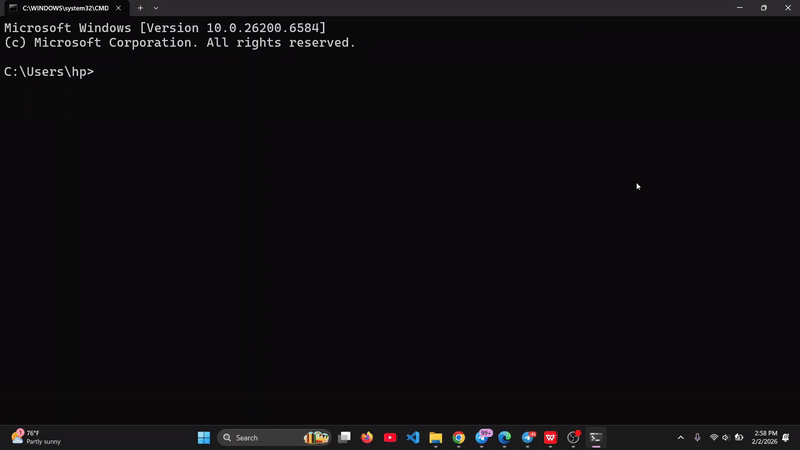

The Problem
Writing good commit messages is tedious. Following Conventional Commits (feat:, fix:, chore:) is even more tedious. And writing thorough code reviews or a proper README? Most developers skip it entirely.
I built git-mood to automate all of this with AI.
How It Works
Install it globally from npm:
npm install -g git-moodThen use it in any Git repo:
# Generate a conventional commit message from staged changes
git-mood commit
# Deep code review of your staged changes
git-mood review
# Auto-generate a README for your project
git-mood readmeKey Features
- AI Commit Messages — analyzes your diff and generates proper Conventional Commits
- Deep Code Reviews — highlights potential bugs, improvements, and style issues
- README Generation — scans your project structure and creates a comprehensive README
- Google Gemini Powered — uses the Gemini API with your own key (BYOK)
- Zero config — just install and run
Why I Built It
Good commit messages are documentation. Bad commit messages are debt. I wanted a tool that makes writing good ones effortless.
I shared it on r/git and got useful feedback from the community. The most requested feature was support for different AI providers — which is on the roadmap.